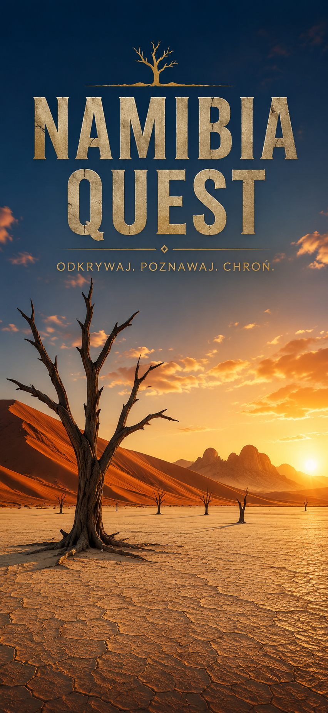

Profil ekspedycji
Ostatnie osiągnięcie: Strażnik Oceanu
Zespół podróżników
Dzień 1 · Windhoek
Wybrany profil
Pewna ręka na szutrze, dobra mina do złej drogi.
Dzień 1 · Windhoek
Słońce
Plecak
Ruch
Narzędzie
Trasa wyprawy
Region 01
Twój styl
Twój bohater wyprawy jest gotowy na drogę.
Windhoek · Muzeum
Muzeum
Zbuduj oś z 10 wydarzeń.
Najpierw zbierz kafle na osi, potem poprawiaj kolejność strzałkami i sprawdź wynik.
Windhoek · Logistyka
Dotknięte pole jest lewym górnym rogiem elementu. Ciężkie rzeczy trzymaj nisko, a podręczne wysoko.
Logistyka
Najcięższe rzeczy lepiej trzymać nisko, a kluczowy sprzęt musi być dostępny po drodze.
Droga 01 → 02
Odblokowano
Krótki przystanek na pustkowiu: rdza, stare auta, ziemne wiewiórki i legendarna szarlotka przed dalszą drogą.
Zatrzymujesz się w Solitaire, aby spróbować legendarnej szarlotki. Może to jednak nie być takie proste...
Region 02
Ułóż plan obozu. Najpierw zabezpiecz bazę i wodę, potem braai, na końcu poranek przed wyjazdem do Sossusvlei.
Region 01
🌊 Ocean
🦭 Foki
🦩 Flamingi
🏜️ Wydmy
Ocean Guardian
Nagroda regionu
Walvis Bay 2026
Seal Kayak Adventure działa najlepiej w trybie poziomym.
Expedition Journal
Seal collected: Nie
Kayak completed: Nie
Wildlife Search completed: Nie
Dzień 5 – Walvis Bay
Tego dnia wypłynęliśmy na lagunę pełną fok i ptaków. Udało się sfotografować mieszkańców wybrzeża i zdobyć Pieczęć Strażnika Oceanu.